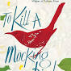
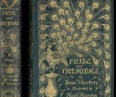
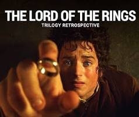

Escape The
Ordinary
Reading books plays a vital role in professional and personal development. It enhances knowledge, strengthens language and communication skills, and improves critical thinking. Regular reading helps individuals stay informed, develop a broader perspective, and make better decisions. It also improves focus, analytical ability, and problem-solving skills, which are essential in any professional environment. Additionally, reading reduces stress and supports continuous learning, contributing to overall productivity and professional growth.
Ten famous books, spanning classics and modern hits, include To Kill a Mockingbird, Pride and Prejudice, 1984, The Lord of the Rings, The Great Gatsby, Harry Potter and the Philosopher's Stone, The Little Prince, The Diary of a Young Girl, Animal Farm, and Don Quixote.
To Kill a Mockingbird

To Kill a Mockingbird is Harper Lee's classic 1960 Southern Gothic novel, narrated by young Scout Finch in fictional Maycomb,
Alabama, during the 1930s Great Depression, focusing on her lawyer father Atticus's defense of a Black man (Tom Robinson) falsely accused of rape,
exploring themes of racism, justice, prejudice, and childhood innocence, alongside the children's fascination with their reclusive neighbor, Boo Radley, and
featuring an iconic 1962 film adaptation with Gregory Peck.
Reference of this book
1984
George Orwell's 1984 is a dystopian novel about a totalitarian superstate, Oceania, where the Party, led by the omnipresent "Big Brother," controls every aspect of life, thought, and history through constant surveillance (Telescreens) and propaganda. The story follows protagonist Winston Smith, who works for the Ministry of Truth (rewriting history) but secretly rebels by keeping a diary, seeking forbidden love with Julia, and trying to join a mythical resistance, all while facing torture and brainwashing to ultimately love Big Brother. It serves as a powerful warning against unchecked government power, manipulation of truth, and the loss of individuality. ISBN 978-0451524935
Pride and Prejudice

Pride and Prejudice is Jane Austen's beloved 1813 novel, a witty romantic comedy of manners set in Regency England, following spirited Elizabeth Bennet and proud Mr. Darcy as they overcome their initial dislike, pride, and prejudice to find love, exploring themes of marriage, class, reputation, and family duty amidst societal pressures for the Bennet sisters to marry well. It's a timeless classic known for its sparkling dialogue, memorable characters, and insightful social commentary on love, status, and self-discovery.The Great GATSBY

The Lord of the Rings (LOTR) is J.R.R. Tolkien's epic high fantasy novel, a sequel to The Hobbit, set in Middle-earth, chronicling the quest of hobbit Frodo Baggins and his companions to destroy the powerful One Ring, forged by the